The Documents Preference settings apply only to the current document. Note that the available preferences are different between the Cashbook, Express and Gold editions of MoneyWorks.
To open the Documents Preferences window
The document preferences window will open. This is organised into tabs for easy access.
The Data Entry options are different in MoneyWorks Cashbook.
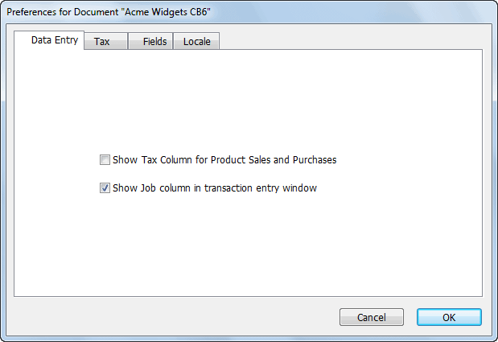
Show Tax Column for Item Sales and Purchases If you want to be able to set the tax amount easily in item transactions, turn this option on. You can still change the tax amount if this option is off by switching the transaction to By Account (click on the Service tab), making the change, then switching back to By Item.
Show Job Column in transaction entry window: If set there will be an additional Job column in the Transaction entry window, allowing you to tag each detail line with a job code. You can search on the Job field using the Find command, or use the Job Summary (Job) report to show the income and expenditure against a job.
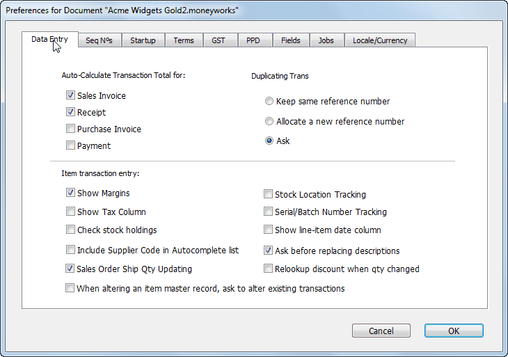
Auto-Calculate Transaction Total This option can be set separately for receipts, payments, sales invoices and purchase invoices. Check this option if you want to be able to enter net or gross amounts into detail lines for the transaction and have the transaction Amount field calculated automatically. This means that you do not need to know the total of the transaction before entering it into MoneyWorks.
This is normally on for sales-type transactions and off for purchases. It is on for all Order Entry transactions.
These options determine how MoneyWorks will allocate a new reference number when a transaction is duplicated. The reference number is the cheque number for a payment, the receipt number for a receipt, the order number for a creditor invoice/purchase order and the invoice number for a debtor invoice/ sales order. A new reference number is always given when you duplicate a journal.
Keep same reference number: The reference number is the same as in the original transaction.
Allocate a new reference number: The next reference number in the sequence is allocated to the new transaction.
Ask: When you duplicate a transaction you will be asked whether to keep the old reference number or use a new one.
If Cancel is clicked, the transaction is not duplicated.
Note: When you duplicate a quote, you will also be asked if you want to update the pricing.
These options affect how item transactions are entered.
Show Margins: When set, the cost of goods and the margin will be displayed during the entry of cash receipts or debtor invoices that involve products.
Show Tax Column: If you want to be able to set the tax amount easily in product transactions, turn this option on. You can still change the tax amount if this option is off by switching the transaction to Service (click on the Service tab), making the change, then switching back to Product.
Check Stock Holdings In MoneyWorks Gold only, if you want to be warned of an out-of-stock condition as you enter a sales transaction, turn this option on. This may slow down data entry.
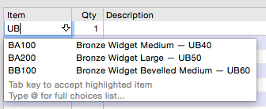
Include Supplier Code in Autocomplete list: If this is on, the supplier's item code will be appended to the item's description indropdown displayed when entering into the Item field on transaction detail lines. This allows you to easily enter the supplier's code instead of your own.
Sales Order Ship Qty Updating Use this option to have MoneyWorks check current stock levels when opening an existing Sales Order and offer to update ship quantities if new stock is available.
Stock Location Tracking: Turn this on to enable stock location tracking, i.e. the management of inventoried items in different locations.
Serial/Batch Number Tracking: Turn this on if you have inventoried items that you need to track by serial number of by batch.
Show the line-item date column: If this is on, and additional date column is displayed in item transaction entry, allowing you to record dates against detail lines. You will need this on if you want to track batches which have expiry dates—in this case the date column is used to record the expiry date for new batches purchased.
Ask before replacing product descriptions If you want MoneyWorks to ask you before rewriting the product description when you change a product code in a transaction, you need to turn this option on. This is useful if you use product or resource codes for services and are typing long narratives into the description that you do not want to accidentally obliterate.
Relookup Discount when Qty is Changed If this is set and you change the quantity in a detail line, MoneyWorks will relookup the discount for the product (based on the product record and possibly the customer record). If the option is not set, and you have changed the discount field (or the extension field, which causes the discount to recalculate automatically), then changing the quantity will not affect the discount rate.
When altering an item master record, ask to alter existing transaction records If this option is on, and you change a product code in the Products list, you will receive the following prompt:
the autocomplete
The supplier's code appended to the autocomplete dropdown
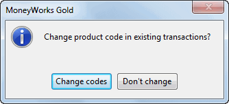
If you click Change Codes, MoneyWorks will change the product codes in all existing transactions to the new code. This means that product enquiries will still show the historic transactions. If you choose Don’t Change, the product record will be effectively decoupled from the existing transactions.
The Sequence Numbers panel (not Cashbook) allows you to set the current reference number sequence for receipts, orders, invoices and jobs. Cheque numbers have different sequences per account, and are set in the Account record —see Bank Settings. Journal sequence numbers cannot be altered. You can have separate sequence numbers for batch and manual receipts.
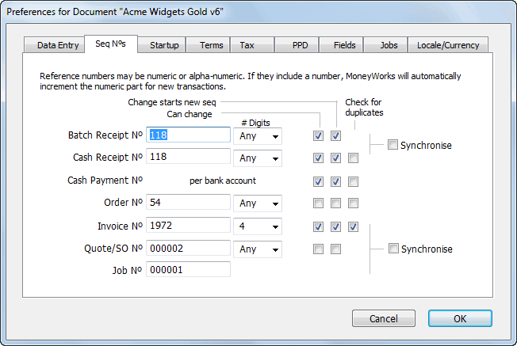
Note: Changing Sequence Numbers can only be done in single-user mode.Reference “numbers” may include non-numeric characters. Provided that the numeric part is at the end of the “number”, MoneyWorks will automatically increment the numeric part for each new or duplicated transaction. If you don’t want a reference number to auto-increment, you should put a non-numeric character (such as a space) at the end.
To change the sequence number, select the appropriate field and type the new sequence number.
If you would like a reference number to always be a certain number of digits, choose a number from the pop-up menu next to the reference number. Unless you choose Any, MoneyWorks will force the reference number to have at least that number of digits by inserting zeros on the left hand end. This is useful for ensuring that invoice numbers, for example, will always sort correctly (since the invoice number is an alphanumeric value, “300” comes after “10032”, but “00300” comes before “10032”.
Can Change If you want to be able to change the reference number that MoneyWorks assigns to a new transaction, turn on the Can Change option.
Change Starts New Seq If you want changes to a sequence number in a transaction to start a new sequence, set the Change Starts New Sequence option. When a new reference number is entered into a transaction it will form the basis of the new sequence series.
If you have this option set and you are entering a transaction with a reference number that you do not want to be the basis of a new sequence you should append a backslash (“\”) to the end of the reference number. MoneyWorks will remove this, and the sequence will be unchanged. An example of this is an auto payment made from your bank account.
Check for Duplicates If you want MoneyWorks to check for duplicate sequence numbers, set the Check for Duplicates option.
Synchronise You can have the same sequence of numbers operating for Batch and singly entered receipt numbers, and for Quote, Invoice and Job numbers. Set the Synchronise option to achieve this.
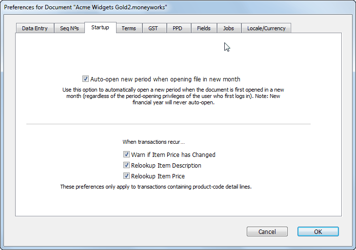
Use this panel to control the behaviour of MoneyWorks when your document is opened (e.g. how transactions recur).
Auto-open new period when opening file in new month: If on, a new period will be opened when the MoneyWorks file is first opened after the end of the previous period (regardless of the user’s privilege settings), provided it is no longer than 30 days after the end of the old period
Warn if Product Price has Changed Gives a warning when the document is opened if the product price recorded in a recurring transaction differs from the current selling price recorded in the product file.
Relookup Product Description Replaces the detail line description in the new transaction with the current product name. Turn this off if you want to retain the descriptions in the original transaction.
Relookup Product Price Updates the sell prices in the transactions if they have changed (and hence change the value of the transaction.)
This panel allows you to specify payment terms and credit hold/overdue payment warnings.
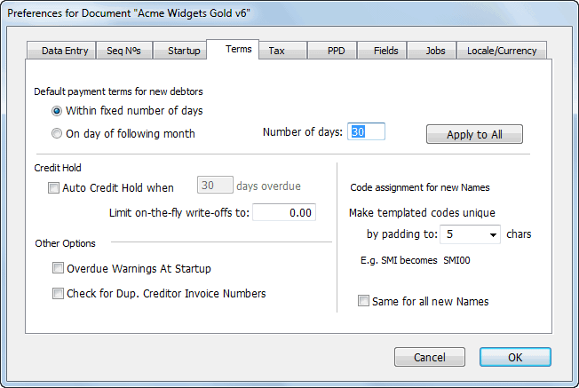
Default Payment Terms Set payment terms for debtors in this section. The payment terms specified here are used to specify the default terms for new debtors. You can override these terms for individual debtors—see Debtor Terms.
Apply to All: This sets the payment terms for all existing debtors to the currently specified default terms. Use this only if you need to change the terms for all your debtors.
Auto Credit Hold Check this option if you would like an automatic credit hold facility for overdue debtors. Enter the number of days overdue after which the credit hold takes place.
With this option is checked, MoneyWorks will warn you when you enter an invoice for a debtor if they are over their credit limit already, or if they have invoices that are overdue. You will be given the option of putting the invoice on hold.
Limit write-off amount to In MoneyWorks Gold only, you can set the maximum amount that can be written-off (using the Write-off check-box) when receipting against invoice—see Write Off Option.
Overdue Warnings at Startup Turn this on if you want to be alerted of any overdue debtors or creditors when you open your MoneyWorks document
Check for Dup. Creditor Invoice Numbers Turn this option on if you want MoneyWorks to check to see if an invoice with the same number has already been entered for the current creditor. The check is done when you accept the transaction by clicking OK or Next.
Make templated codes unique Specify here how many digits you want to append to a template code when it is created to make it unique.
Same for all new names Turn this option on if you want to automatically assign a unique code when creating a new Name.
For example, with this option on (and the padding set to six), if you create a new code for Mr Smith (SMI), it will automatically pad to SMI001. The next Smith (or Smithers) will automatically pad to SMI002 etc.
These preferences determine if you want MoneyWorks to track your GST/VAT or Sales Tax, and (for GST and VAT), the length of your GST/VAT cycle—this is required for the GST Report (but not for Sales Tax reporting, which is normally done using the Sales Tax report). Before you print your first GST/VAT report, you will need to specify the end date for your first GST/VAT cycle. Thereafter, MoneyWorks will recalculate the next cycle end date using the cycle length specified.
Note: MoneyWorks Cashbook only supports GST on a payments/cash basis.
versions before 9.0.2 will have Bankers' rounding set by default. New documents created with 9.0.2 and later will default to Round Away From Zero.
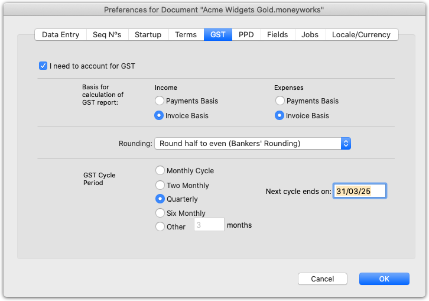
For an outline of the way in which these settings are used to generate your GST/ VAT returns —see GST, VAT, Sales Tax & Tax Codes.I need to account for GST/VAT/TAX This option must be on if MoneyWorks is to track your Tax. If it is not set no Tax tracking will be done—the Net, TC and Tax fields in the detail lines of transaction entry will be replaced by a single Amount field.
Income Click Payments or Invoice Basis to indicate whether GST on your income is payable on invoice (accruals basis) or when the payment is received (cash basis).
Expenses Click Payments or Invoice Basis to indicate whether GST on your expenses is payable on receipt of invoice (accruals basis) or when the payment is made (cash basis).
Rounding Defines how half cents should be rounded. The choices are Bankers' Rounding (round-half-to-even) which will round half cents towards an even number; or Round Away From Zero which will round half cents "upwards" (actually downwards when negative). Documents created in MoneyWorks
GST Cycle Click the radio button to identify your GST return cycle frequency.
Next Cycle ends on Enter the last date of the next Return cycle into the edit box.
This date is used to identify the transactions to be processed for the GST/ VAT return.
The handling of the prompt payment (or settlement) discounts differs by country. If you are giving or receiving prompt payment discounts, you need to ensure that it has been correctly set up for your local requirements.
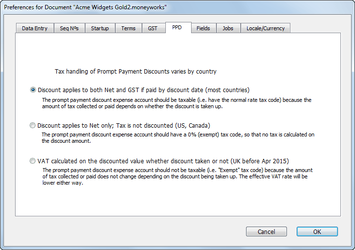
When a prompt payment discount is taken, MoneyWorks creates a credit note to account for the discounted amount. This is coded to a nominated “Discounts” general ledger code. It is important that the GST/VAT/Tax code on this account
has the appropriate GST/VAT/tax handling for your region.
Discount applies to both Net and GST if paid by discount date The case for most jurisdictions, the tax is a straight percentage of the amount paid, regardless of whether the prompt payment discount is taken up or not. The general ledger code should be taxable (see example 1a below), unless it is being treated in a similar manner to a finance charge (example 1b). If in doubt, you should check with your accountant.
Discount applies to Net only; Tax is not discounted For the USA and Canada, the tax is calculated on the full value of the invoice, and is not reduced by paying early. The Discount general ledger account should be exempt of tax (example 2).
Discount applies to both Net and VAT; VAT is always discounted This was the situation in the UK prior to April 2015. For the UK, the VAT is calculated on the discounted amount of the invoice, regardless of whether the discount is taken (which gives rise to some extremely weird arithmetic). The Discount general ledger account should be exempt of VAT (example 3).
To illustrate how the settings work, we will assume an invoice for $100 plus tax at 10%(i.e. a theoretical total of $110) with a 10% prompt discount rate.
|
|
|
|---|---|---|
|
|
|
|
|
|
|
|
|
|
|
|
|---|---|---|
|
|
|
|
|
|
|
|
|
|
|
|
|
|
|
|
|
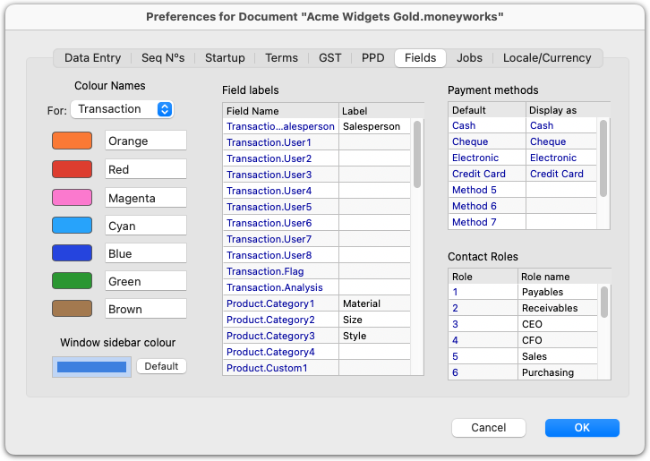
Use this to customise the labels on your transaction fields, payment methods, contact roles and colours in MoneyWorks.
Note that there are separate naming schemes for the colours in each table in MoneyWorks. For example, red transactions might be labelled "Urgent", and red customers as "Bad".
In MoneyWorks 9.1.5 and later you can select the window sidebar colour for the document. Having different window sidebar colours can make it easier to differentiate different companies if you work with multiple compay documents simultaneously.
Click the colour swatch at the lower left and select a colour from the colour picker. The colour you select will be used for the highlight colour in the sidebar of list windows, and MoneyWorks will calculate a dimmed version of the colour to use as the sidebar background.
Click Default to restore the default blue colour.
Note: The lists used with the Find and Sort commands (and in the forms editor) will use the internal field name, not the user defined value.
Note: The first four payment methods in MoneyWorks have special behaviour and cannot be altered.
Note: You can use the fieldLabel() function to display the label in a report.
The job control preferences determine what level of job control is used.
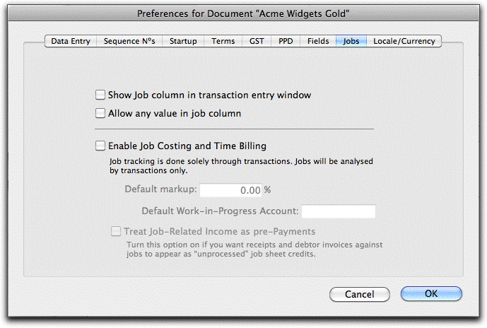
Show Job column in transaction entry window If set, an additional column, the Job column, will be displayed in the detail line area of the transaction entry screen. This column can be used to enter a job code to tag that detail line as being associated with a job.
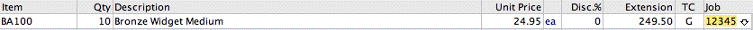
The additional job column will appear in all transactions except journals. It is not possible to associate a journal with a job.
Allow any value in job column Normally when you type an entry into the job column of a transactions detail line MoneyWorks will check to see that the entry refers to a valid job. If the Allow any value in job column option is set, you will be able to type any value into the job column. This option and the Enable Job Costing and Time Billing option are mutually exclusive.
Enable Job Costing and Time Billing Only available in MoneyWorks Gold. When set this enables the full time billing system. For a discussion on this of these see Job Preferences.
Treat Job-Related Income as Pre-Payments Turning on this option will cause job related income transactions to be transferred as pending (instead of processed) job sheet items. Turn this on if you create invoices (or receipts) coded to the job before work on the job has been done (e.g. a deposit or pre-payment on a job), and this income needs to be offset against subsequent work.1
Used to specify the intended country of operation of the accounts, and the currencies used.
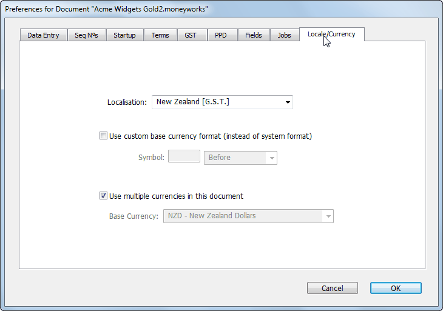
Localisation Used to set the tax names and other details for the file (e.g. UK localisation will have a VAT tax; Australian will have GST).
Use custom base currency format If set allows you to specify a different currency symbol for your base currency other than that given by your system settings.
Use multiple currencies For Gold only, used to set up multiple currencies. See multi-currency for further details.
1 In MoneyWorks 6 and earlier this option was set in the Posting confirmation window.↩︎
When you buy and sell goods or services, there is often a tax imposed on the transaction. This tax can take the form of a Sales Tax (such as the in USA), or a Value Added tax (VAT or GST), as is prevalent in Australia, EU, New Zealand and many other countries. Parts of Canada are particularly well served in this respect in that they have both a GST and a sales tax (PST).
The good news is that MoneyWorks can manage these taxes for you1.
Note: If you are a home user or are not registered for GST or Sales Tax, you should have the I need to account for GST/VAT/Tax Preference option turned off. In this case this section will not be relevant to you.
There are fundamental differences between a Sales Tax and a Value Added Tax:
Sales Tax: This is imposed only at the end of the supply chain, and cannot (normally) be reclaimed. When you buy something that has sales tax in it, that tax is considered to be part of the purchase price. If you purchase an item to be used in your production, you will have a sales tax exemption for that item, so the supplier will not charge you sales tax. However if you charge sales tax on your sales, you are liable to pay the tax you have collected.
Value Added Tax: This is a percentage tax imposed at each stage of the supply chain. When you purchase an item, the tax will be included in the price; when you resell the item, you will add the tax to your price. You are liable to pay the tax you have collected, less the tax you have paid (i.e. just the tax on the value-add that you have provided).
If you are in the United States, or have just Sales tax refer to Sales Tax and PST. If you have GST or VAT refer to GST and VAT.
If you are in Canada, you should read the section on GST. If you also have PST, you will also have to read the section on Sales Tax. QST (in Quebec) and HST (Harmonized Sales Tax), are essentially the same as GST (but at a higher rate); if you are in Alberta, you (currently) have just GST.
When you enter a transaction in MoneyWorks, the tax code (and hence rate) is automatically derived from the general ledger account used, or from the customer/supplier. You can over-ride this tax code during transaction entry.
To check the tax codes used in transactions, run the Tax Coding report (in the Audit section of reports). This lists all transaction detail lines sorted by tax code (and summarised by currency, if any) for the nominated period range.
The Tax Coding report can also be run for just a selected tax code. Thus, for example, if you are required to pay a USE tax, the report can be used to quickly identify the transactions and the total upon which the tax will be based.
This section discusses GST and VAT, and is also applicable to HST and QST in Canada. For simplicity in this section, we will just refer to GST (but unless otherwise stated, this also means VAT, QST or HST).
Note: If you are in a country that uses VAT, MoneyWorks will display “VAT” instead of “GST”. In Canada, MoneyWorks will display “TAX” to indicate the combined GST and PST, or “HST” for provinces with HST.
GST is a simple tax that is applied to the inputs and the outputs of business. Businesses themselves do not (in the normal course of events) pay GST—it is paid by the private citizen. But businesses do collect GST on behalf of the Government, and must remit this back to the Government on a regular basis2.
Thus almost every transaction that you make as a business will attract GST in some form or other. If you are registered for GST you will be required to send in a return to the Government on a regular basis—we term this the GST cycle. In Australia this return is called the Business Activity Statement (BAS) and is sent to the ATO; in New Zealand it is referred to as the GST Return and is sent to the IRD; in Canada you send your GST/HST Return to the CRA.
Fortunately MoneyWorks monitors your GST for you automatically whenever you enter a transaction. Provided your accounts are up to date, simply printing the GST Report will tell you how much GST you owe or are owed.
Basically whenever an item or service is sold, it is subject to a goods and services tax (the rate will vary by country, but it is normally 10% in Australia, 15% in New Zealand, and currently 5% in Canada). This GST is added to the price of the goods or service, and is collected by the supplier who will subsequently remit it to the Government.
Consider for example the case of a vehicle taken in for repair. For simplicity we’ll use the Australian GST rate of 10% in this example.
The vehicle is found to need a replacement back sprongle. The repair company orders the sprongle from the sprongle supplier, and is charged
$100 plus GST (i.e. $110).
The company charges the vehicle owner $120 plus GST (i.e. $132) for the sprongle.
Fitting the sprongle takes 2 hours of mechanics’s time, which is charged at
$20 plus GST (a total of $44).
The transactions are summarised in the following table:
| Net | GST | Gross | |
|---|---|---|---|
| Purchase Sprongle | $100 | $10 | $110 |
| Total Payments | $100 | $10 | $110 |
| Sell Sprongle | 120 | 12 | 132 |
| Labour | 40 | 4 | 44 |
| Total Receipts | $160 | $16 | $176 |
| Incomings - Outgoings | $60 | $6 | $66 |
At the completion of the job, an invoice will be made out to the customer for
$160 plus GST (a total of $176).
For this job the repair company has paid out $10 in GST. Because the company is GST registered, it can claim this amount back. But it also collected $16 in GST, which must be paid. In practice the company will just pay the balance of the receipts and the payments (in this case $6).
The good news is that most businesses will make their returns only every few months3, meaning that the repair company has the use of the $6 for some time, which will help it with its cash flow.
And what of the person who had to pay for the sprongle repair? Well if the vehicle was owned by an organisation registered for GST, it would claim back the
$16 it paid (so in effect there has been no GST paid). But if it is owned by Joe Bloggs private citizen, the Government get to keep the $16 (i.e. Joe cannot claim it back).
When you first set up MoneyWorks you should have set your GST structure and cycle in the Preferences — see GST/VAT/Tax.
MoneyWorks comes pre-supplied with a number of tax codes. These are assigned to accounts and customers, and are the basis on which the GST is calculated for a particular transaction. The GST Guide Form uses these tax codes. For a list of the default tax codes, see Tax Codes
You can add other GST tax codes if you need them. Tax codes that you add will appear when used on the GST Report, but you will need to alter the GST Form if they are to appear on this.
When you create a general ledger account, you will associate a tax code with it. When you enter a transaction and use that account, the tax code is used to calculate the GST component for that part of the transaction. You can if necessary override this tax code when you enter the transaction.
Unless you are also registered for GST/VAT in their jurisdiction (in which case see Paying GST/VAT in Multiple Countries, transactions with suppliers or customers outside your country will not (normally) be subject to GST. When you export (or import) goods you will need to override the tax code in the transaction entry—this can be done automatically by setting an override code in the Name record — see Override Tax Code.
When you are due to prepare your return, you print the GST Report. Before this you must ensure that all transactions for the period have been entered and posted. It is a good idea to set up a reminder message to come up a week or so before the return is due so that MoneyWorks can warn you— see Reminder
Having prepared your GST report, which provides a complete audit trail of how your GST has been calculated, you can then print off your GST form5—this shows how to fill out your return to your local tax authority.
To prepare your return for a given GST cycle:
You should have all transactions that occurred in the cycle entered and posted into MoneyWorks. If you backdate transactions so they would have appeared in a previous cycle, they will automatically be accounted for in the current cycle.
Print the GST Report. This summarises the GST paid out by you and the GST collected—the Canadian report may also list the PST (but you should use the Sales Tax report to determine the PST payable unless your PST cycle matches your GST cycle). The difference in the GST column is payable to, or refunded by, the Government.
When (and only when) you are satisfied that your GST report is correct, it should be finalised. This tags all the transactions in the report as having been processed for GST. They will not appear in future GST reports (and hence cannot be double counted). It also updates your GST cycle date ready for your next GST return.
Print off your GST Guide Form (optionally). This shows what to put where on your GST return.
If you need to pay money to the Government, you will need to write out a cheque. This (or any refund you might receive) will need to be specially coded — see Paying your GST.
The GST report prints a summary of the GST received and paid by you, broken down by the various tax codes, and is used to calculate your GST payment or refund. As such you must run it prior to making a return. The report is normally printed showing a list of transactions, providing a definitive reference as to how the GST was calculated.
To print the GST Report:
The GST Report setup dialog is displayed.
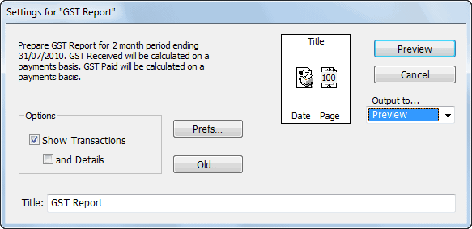
The information at the top left of the dialog box regarding the GST period dates and the basis for the GST calculations is taken from the Preferences — see GST/VAT/Tax.
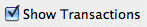
If the information at the top left is incorrect, click the Prefs button to change the preference settingsIf Show Transactions is selected, each transaction that is included in the GST calculation is printed. You should print at least one copy of the report with this option set, as it will
make the GST Audit trail clearer. If the option is not selected, a summary report is printed.
Note: The GST Report operates on posted transactions only—any transactions in the GST cycle must be posted before running this report.
If the and Details option is checked, MoneyWorks will also print details of each transaction detail line. As this may make the report very long, it is recommended that you only use this
option if you are trying to locate a transaction whose GST amount appears to be wrong (e.g. a GST-Free transaction that has had GST applied to it6).
Check that the Show Transactions option is on
This is how the report should normally be printed.
Set the output to Printer and click Print
The GST Report will be printed. You will be asked if you want to finalise the GST report.
If you preview the report, the Finalise GST window will be displayed when you click the Close or Next button.
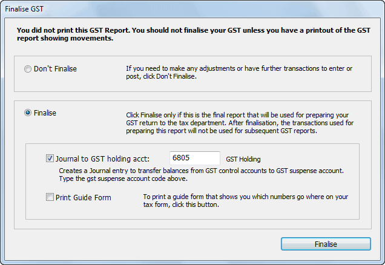
When the report has successfully printed and you are happy that it is correct, click Finalise, otherwise click Don’t Finalise
Finalising updates the GST cycle and the also tags each transaction as having been processed so it won’t appear on the next GST report. Finalisation cannot be undone, so ensure that everything is correct before clicking Finalise. The numbers on the finalised report will be the ones that you transcribe to your return.
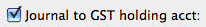
Note: For most printers, printing is done “in the background”, allowing you to continue to work on your computer while information is being printed. In this situation the GST Finalisation request will appear before the report is printed. You should wait until the complete report is successfully printed on the printer before clicking Finalise.Set the Journal to GST Holding Account option on if you want to have the GST journal created and posted for you automatically (it will also be stamped as having been
processed for GST in the current cycle). If you don’t create the journal, you will need to do it manually — see Journalling Out the GST Accounts.
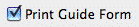
Note: The first time you set this option you will need to specify the GST Holding account. It should normally be a Current Liability, with a tax code of “*”.Set the Print Guide Form option on if you want to also print the GST guide form (this is disabled if there is no Guide form for your country). This will help you fill out your GST Return/
BAS. You can print this later by choosing GST Guide Form from the Reports menu.
It sometimes happens that people forget to finalise their GST report, and don’t discover this until some time later (normally when they come to prepare the next GST return).
Should this happen to you, the first thing to do is to redo the GST return to see if it has changed. Why would it have changed—simply because you may have backentered or corrected transactions in that (or a previous) GST cycle7.
So check that the totals on this are the same as the ones used on your last GST return. If they are the same, simply finalise the report.
If they are different, you will need to do a combined report for the previous and the current GST cycles, and subtract off the results that you used to make your previous GST return. To achieve this, set the GST Cycle date forward to the end of the current GST Cycle (by clicking the Prefs button in the GST Report Settings window), and print the report.
The first part of the report deals with receipts made by you during the GST period—the GST component of these must be paid to the government. The second part of the report deals with payments made by you—the GST component of these can be claimed back. It is therefore the difference between these amounts that you need to pay or claim—this is shown in the Total line at the bottom of the report.
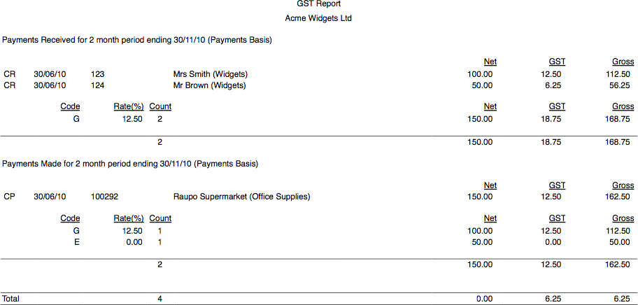
Note: Canadian users will get a report detailing both GST and PST/QST. For QST, just use the figures from the report; for PST, you should only use the GST column for the GST, and run the Sales Tax report for the PST
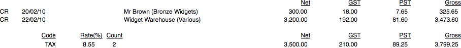
If you have entered your transactions correctly and not overridden any of the GST fields the following should apply:
The Z, E, F, I and * tax codes should have 0 in the GST column (they won’t be shown if you haven’t used any accounts that use them).
The amount of GST for the other tax codes divided by the GST rate (currently 10.0% for the G and C tax code in Australia, 15% for the G code in New Zealand) should equal the Net. Do not worry if it is a few cents out—this is rounding error due to GST amounts of less than 1 cent.
The report operates on the following principles.
All Posted transactions in the system that occurred on or before the GST Cycle Date and have not previously been processed for GST will be included in the report
This means that the GST cycle is totally independent of your normal financial period structure. It also means that any transactions that need to be posted into periods already processed for GST will be handled correctly in the next GST report.
The GST Cycle Date is set in the Preferences dialog. It is automatically maintained by MoneyWorks, and is updated when you Finalise your GST report—you can change it if it is wrong.
The processing of the transactions varies depending upon whether you are operating on a cash/payments basis or an invoice/accrual basis. You may need to talk to your accountant to determine which you are on.
Payments/Cash Basis: All eligible cash payments and receipts are processed, as well as any zero value invoices8. The GST is determined from the tax code of each detail line in each cash transaction. The amount of GST is as recorded in the GST column of the detail line.
If the payment or receipt relates to an invoice, the GST in the detail lines of the invoice are used. Partial payments on invoices are pro-rated.
Invoice/Accruals Basis: All eligible cash payments and cash receipts that are not part of the debtors and creditors system are processed as for cash payments above. All eligible invoices received and sent are similarly processed.
Journals: It is not possible to determine whether a journal entry that involves a GST account should be included in the GST report or not. Therefore any journals that involve the GST accounts will be summarised at the end of the report (or listed if the Show Transactions option is on). You will need to manually adjust the return if any of these need to be included. It is for this reason that we recommend that you do not journal through corrections to transactions involving GST: instead cancel the original transaction, and then create a new corrected one.
Partial payments of invoices: If operating on a payments basis, the amount of the partial payment is pro-rated across the invoice to determine the GST.
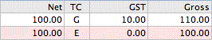
As an example, consider that you have received an invoice for $210 similar to that shown at right.For some reason you paid
only 50% of the invoice, i.e. $105. Of this amount, $5.00 is considered to be GST, being half of the total GST. If you decided to pay the non-taxable portion and not the taxable (i.e. $100 only), MoneyWorks would assume that you had paid 100/210.00 of the entire transaction and calculate GST accordingly at:
100/210*10%=$4.76.
This does not arise on an accrual/invoice basis: all the GST is claimable.
Overpayment by a Debtor: If a debtor overpays his invoices (perhaps he paid one twice by mistake), the overpayment cannot be allocated to any particular invoice. Nor are there any supporting Tax Invoices for the overpayment. Therefore it is considered to contain no GST.
If the overpayment is allocated to the Debtor’s account (so he has surplus funds), and is subsequently used to pay off an invoice, the GST is calculated at that point. However if the amount overpaid is returned to the debtor, no Tax Invoice is generated and hence there is considered to be no GST in the
repayment. This applies whether operating on an invoice or cash basis.
Purging Transactions: Transactions which have not been processed for GST will not be purged if you purge the period containing them (unless the I need to Account for GST preference option is off).
You can reprint a previous GST/VAT Report, provided the original report was finalised in MoneyWorks version 3 or later.
The GST Report settings window will open
A list of previous GST Reports will be displayed.
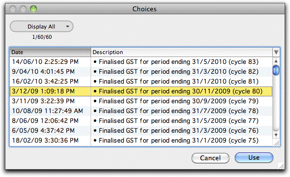
By shift-clicking you can highlight more than one old report, and reprint a single combined report, as shown below. This is handy if you inadvertently finalised your GST Report part way through a GST Cycle.
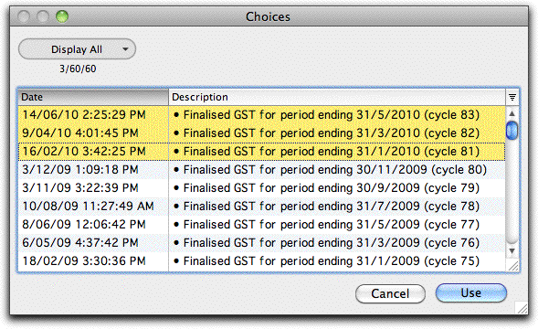
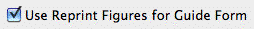
If you want to reprint the GST Guide Form based on this report, set the Use Reprint Figures for Guide Form optionClick the Print button
The GST report will be reprinted.
Note: When MoneyWorks determines that adjustments (cancellations, contras etc) will have no effect on your GST it will mark those transactions as having been processed for GST. They may therefore appear on a reprint of a GST report, even though they were not on the original. The final GST totals however will be the same.
Reprinting the GST Guide Form: You can reprint the GST Guide Form at any time by choosing GST Guide Form from the Reports menu. This will show the results of the last finalised GST Report, or the results of the last reprinted
GST Report if the Use Reprint Figures for Guide Form option was set.
You may change your GST cycle or even move from a payments to an invoice basis. The tax rates themselves might also change — see Changing Tax Rates.
Change of assessment basis: If the way you are assessed for GST changes from an invoice/accrual to a payments/cash basis (or vice versa) your next GST calculation will be handled correctly — even the partially paid invoices. All you need do is change the GST settings in the Preferences dialog box.
Change of GST Cycle: If your GST cycle changes (e.g. from 3 monthly to 1 monthly), all you need do is change the GST cycle and the GST cycle date in the Preferences dialog box. Because each transaction is stamped when processed for GST, MoneyWorks will handle this correctly.
The GST Report provides a definitive audit trail of how your GST is calculated—this is handy for your accountant or any itinerant tax inspectors who may drop by, but is not in a form that can be used as part of your return.
The GST Guide Form will provide information from the GST Report in a form suitable for transcribing to your GST Return or BAS. This prints details from the last finalised GST Return (but is not available for all countries).
When you have finalised your GST return, the GST control accounts should be cleared by means of a journal. This journal will be created and posted for you automatically if you set the Journal to GST Holding Account option when you finalise your return.
If you choose to create it manually, the journal should be made out as follows see General Ledger Journals for information on creating journals:
It should have the same date (and hence the same period) as the end of the GST Cycle
The total GST received as listed in the report should be debited against the GST Received control account
The total GST paid as listed in the report should be credited against the GST Paid control account.
The difference between these is the amount of GST that you owe or will receive as a refund. You need to enter this in (as either a credit if you owe it or a debit if it is a refund, whatever balances the journal) against a GST Holding account.
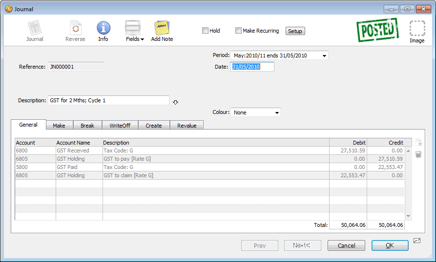
The GST Holding is a normal Current Liability account (i.e. it is not set up as one of the special GST system accounts). It should have a tax code of “*”.
Some time after your GST cycle end date, you will need to pay your GST to the Government—this varies from country to country. Do this using a normal payment transaction, with a single detail line containing the GST Holding code and the amount that was journalled in to this. When this transaction is posted, the balance in the GST Holding account should be zero.
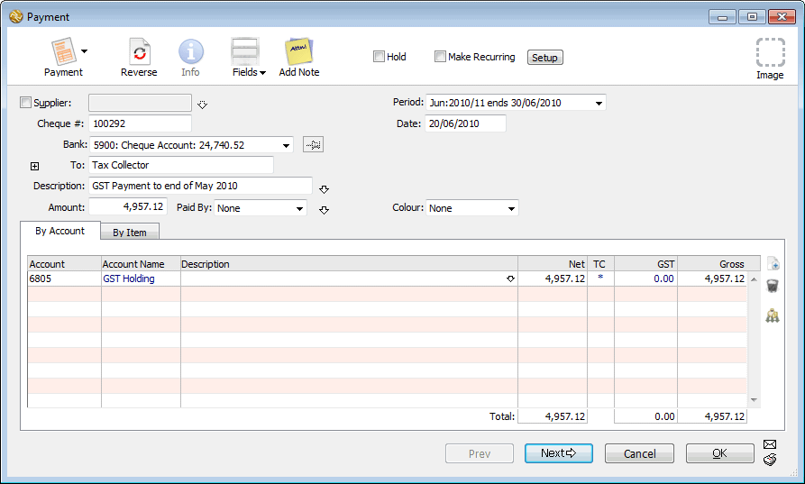
If you are in the happy position of actually receiving a refund for GST, you should process the cheque when it arrives as a cash receipt transaction. It should be coded to the GST Holding account, and again, after the transaction has been posted, the balance in this account should be zero.
Paying GST/VAT in Multiple Countries
Many countries have responded to the growth in on-line international sales by requiring vendors to collect GST/VAT on on-line sales and remit it to the relevant tax authorities. As of version 9.0.8, MoneyWorks Gold/Datacentre can manage your GST/VAT in multiple jurisdictions.
How it works:
You must have Multi-Currency enabled;
You create one or more tax codes specifically for that country to use with sales and purchases for that country;
If MoneyWorks has a tax guide or on-line filing for that country, you map
your code onto the equivalent standard MoneyWorks tax code for that country (for a list of standard tax codes, see Tax Codes);
You use the Audit>Tax by Currency report to summarise your taxes over the required time interval;
Where available, the tax guide and hence on-line filing can then be directly accessed from the bottom of the report;
To use on-line filing in a different jurisdiction you must first run the appropriate tax guide which is where your tax number for that jurisdiction is entered.
As an example, let us suppose that you based in New Zealand (and hence paying New Zealand GST), but you sell into Australia and have to pay GST on Australian sales. You would set up a new tax code (say "OZ") for the standard GST Australian rate:
Note that the tax code is set for use in Australia, and maps onto the standard "G" tax code used in the Australian GST Guide. Similarly you might set up an "OZF" account of zero percent GST mapping to the standard Australian "F" code.
Tip: It might pay to set up separate Tax Paid and Tax Received control accounts for each foreign jurisdiction. See Creating a New Account, and ensure that you set the Account Type to "GST/VAT Received" or "GST/VAT Paid" as appropriate.
For Australian customers (and suppliers) you would set up the Tax Override to "OZ" (and presumably the currency to "AUD").
Determining the GST/VAT Liability
For your GST/VAT in your home country, you will keep finalising the GST/VAT report as usual.
However this probably will not work for other jurisdictions because the time interval might be different, or you might be on a different reporting basis (cash/ payments versus invoice/accrual). In the case of our previous example, GST filing is every two months in New Zealand and every quarter in Australia. Further you might be on an invoice basis in New Zealand, but a cash basis in Australia.
For other jurisdictions use the Audit>Tax by Currency report. This summarises GST/VAT for a period range on either cash or invoice basis. The results are cached and will be used automatically when you run one of the built-in MoneyWorks guides or on-line filing. There are buttons at the end of the report so the applicable guides and on-line filing can be accessed directly from the Preview window:
The ATO are very specific in the data layout requirements for the report. In particular make sure that in your company details (in Show>Company Details)
The ABN Number has no spaces
Phone and Fax numbers are of form 01 2345 6789
Your suburb is entered into address line 3 of the postal address For your suppliers, ensure that:
The ABN Number has no spaces
Phone and Fax numbers are of form 01 2345 6789
Their suburb is entered into address line 4 of the mailing address The following are the valid ATO codes for states: